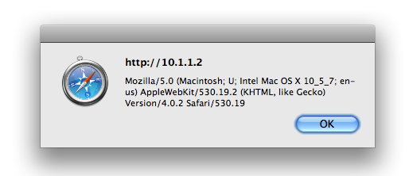
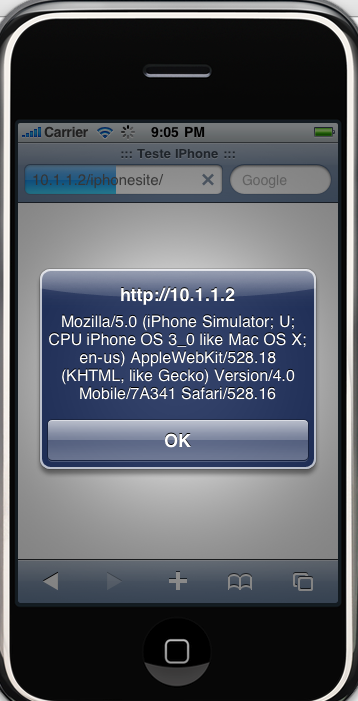

Redirecionando Usuários Do IPhone Para a Versão Mobile Do Seu Site – JavaScript
As pessoas que me acompanham sabem que há pouco mais de um mês adquiri um IPhone.
A minha operadora me ligou oferecendo alguns pontos que valiam desconto na aquisição do aparelho. Não perdi tempo e corri lá buscar.
Desde então as minhas leituras diárias começaram a se voltar mais para IPhone.
Desenvolvimento de aplicativos, desenvolvimento de sites, ‘manhas’ para usar o aparelho, dicas para economizar bateria, e por ai vai.
O que trago hoje aqui faz parte dos meus estudos para criação de sites para o público que usa IPhone, que é, identificar que seu visitante está usando o aparelho e redirecioná-lo para a versão mobile do seu site.
A ideia é bem simples, e, para colocar ela em prática usamos JavaScript.
Primeiro crie um arquivo HTML e o prepare para receber um javaScript dentro das tags do cabeçalho.
<html> <head> <title>::: Teste IPhone :::</title> <script type='text/javascript'> </script> </head> <body> </body> </html>
Deixei apenas o necessário para o HTML funcionar acima.
Coloquei um título para constar, e abri as tags de script onde vai entrar o nosso JavaScript.
Em JavaScript temos um objeto que traz propiedades e métodos do nosso navegador, que é o navigator.
Você pode vê-lo em ação adicionando o seguinte código dentro das tags script:
alert(navigator);
Esse objeto tem propiedades que nos trazem dados como o nome do browser, sua versão, dizer se os cookies estão habilitados e outros.
A propiedade que vamos usar é a userAgent, que traz um conjunto de informações do browser e do dispositivo que está acessando, que é o que precisamos.
alert(navigator.userAgent);
Veja o resultado do código acima ao acessarmos a página. Repare nas informações retornadas:
No Firefox do Linux:
No Safari do Mac:

No Simulador do IPhone:

No própio IPhone:
Reparou que quando estamos lidando com o Iphone, essa informação aparece para a gente na propiedade do objeto ?
Caso estivessemos no IPod Touch, apareceria IPod ao invés de IPhone nas informações.
Agora basta fazer uma verificação para ver se a palavra Iphone ou Ipod está presente nas informações, e, se estiver, redirecionar para sua versão mobile.
Veja o código:
if ((navigator.userAgent.indexOf('iPhone') != -1) || (navigator.userAgent.indexOf('iPod') != -1))
{
alert('IPhone!!!');
//Essa linha redireciona você para o endereço que você colocar
document.location = "http://www.flaviosilveira.com";
}
Qualquer dúvida estamos aí…Abraços!!!